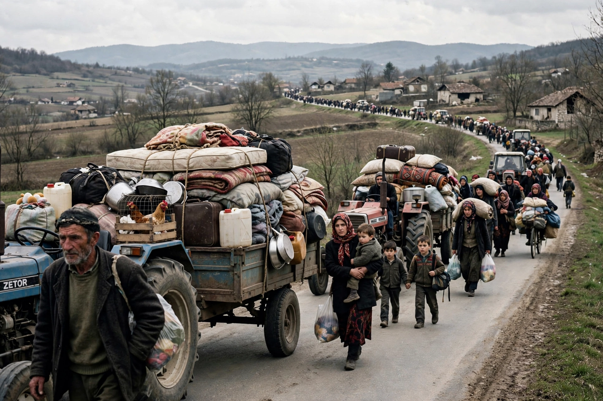

Kosovo War

The Kosovo War was an armed conflict in Kosovo that lasted from 28 February 1998 until 11 June 1999. It was fought between the forces of the Federal Republic of Yugoslavia (Serbia and Montenegro), which controlled Kosovo before the war, and the Kosovo Albanian rebel group known as the Kosovo Liberation Army (KLA). The conflict ended when NATO intervened with a 78-day air campaign, Operation Allied Force, forcing Yugoslav forces to withdraw.
| Date | 28 February 1998 – 11 June 1999 |
|---|---|
| Location | Kosovo, FR Yugoslavia (and Albania) |
| Result | Kumanovo Agreement; Yugoslav withdrawal; UN administration (UNMIK); KFOR deployment |
| Belligerents | KLA and NATO vs. FR Yugoslavia |
| Key figures | Slobodan Milošević; Hashim Thaçi; Wesley Clark |
Background
Kosovo, an autonomous province of Serbia within Yugoslavia, had a majority ethnic Albanian population. In 1989 Slobodan Milošević revoked its autonomy, and Albanians were purged from state institutions; Ibrahim Rugova led a decade of non-violent parallel-state resistance. After the Dayton Agreement of 1995 ended the Bosnian War without addressing Kosovo, frustrations fed support for the KLA, which began attacking Serbian police and officials in 1996–97. Yugoslav counter-insurgency operations in the Drenica region in early 1998, including massacres of Albanian families, internationalised the crisis.
NATO intervention
Diplomatic efforts — a monitored ceasefire in October 1998, and the Rambouillet talks of February–March 1999 — collapsed when Yugoslavia rejected an interim settlement providing for a NATO-led implementation force. On 24 March 1999 NATO began bombing Yugoslav targets. The campaign, conducted without authorisation by the UN Security Council and justified on humanitarian grounds, expanded from military targets to infrastructure across Serbia and Montenegro. Concurrently, Yugoslav and Serbian forces expelled some 850,000 Kosovo Albanians to neighbouring countries in a campaign Western governments described as ethnic cleansing. The bombing of the Chinese embassy in Belgrade on 7 May, which NATO called an accident, caused a major diplomatic crisis.
End and aftermath
The war ended with the Kumanovo Military Technical Agreement of 9 June 1999 and UN Security Council Resolution 1244, which placed Kosovo under UN administration (UNMIK) while formally reaffirming Yugoslav sovereignty, with security provided by the NATO-led KFOR. Kosovo Albanians returned, while some 200,000 Serbs and other non-Albanians fled or were displaced amid reprisals. Milošević was indicted by the ICTY for war crimes in Kosovo. Kosovo declared independence in 2008, recognised by about half of UN member states but not by Serbia.